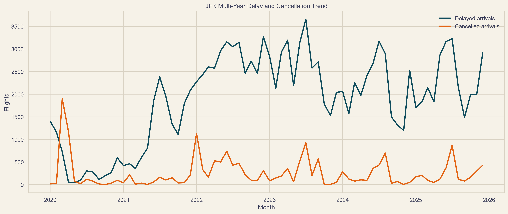
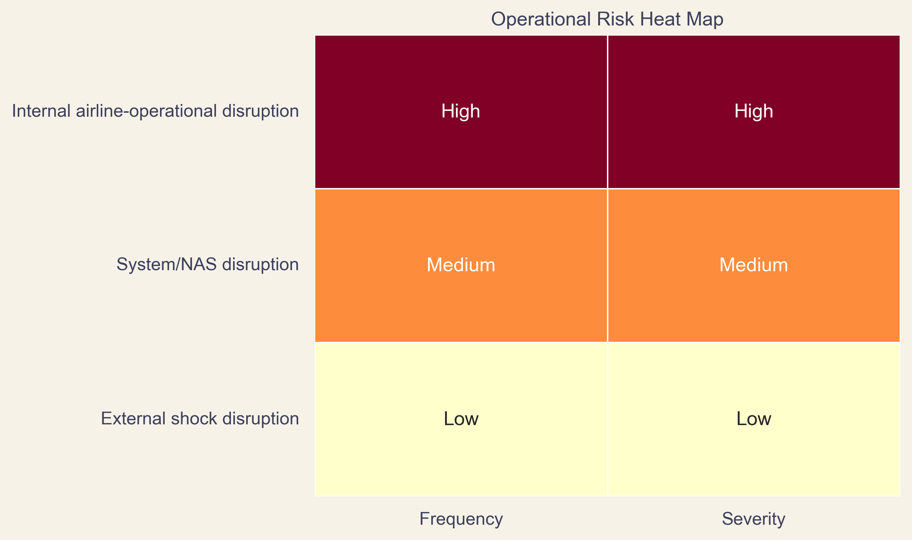
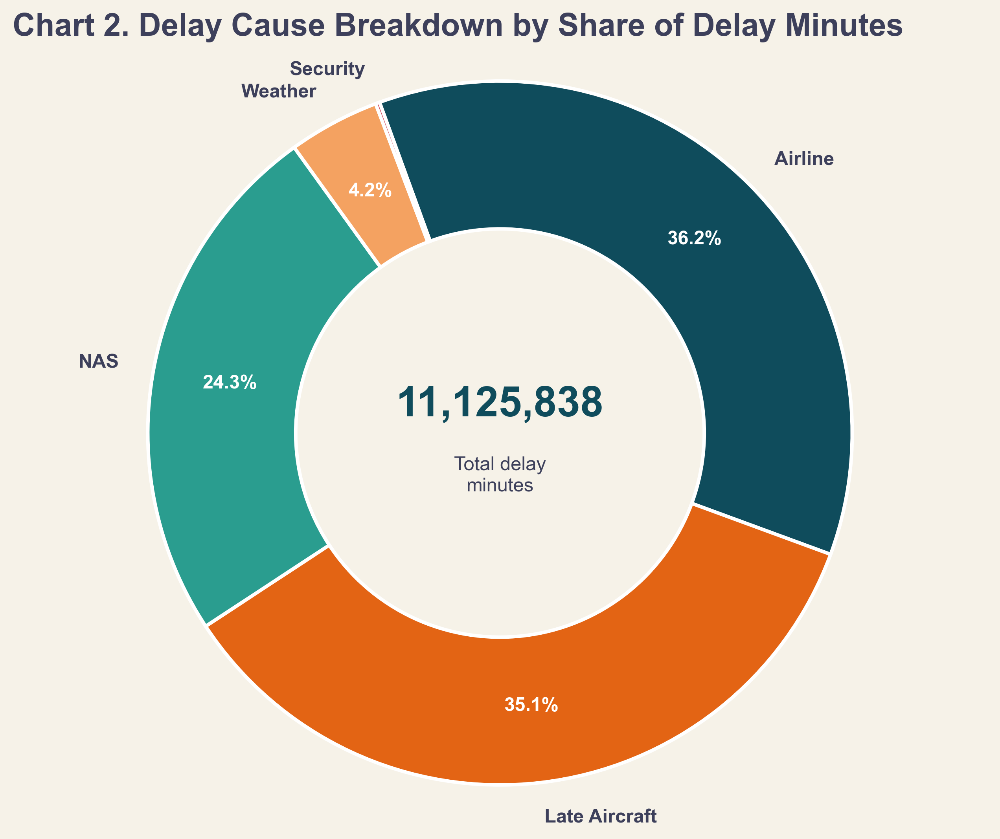
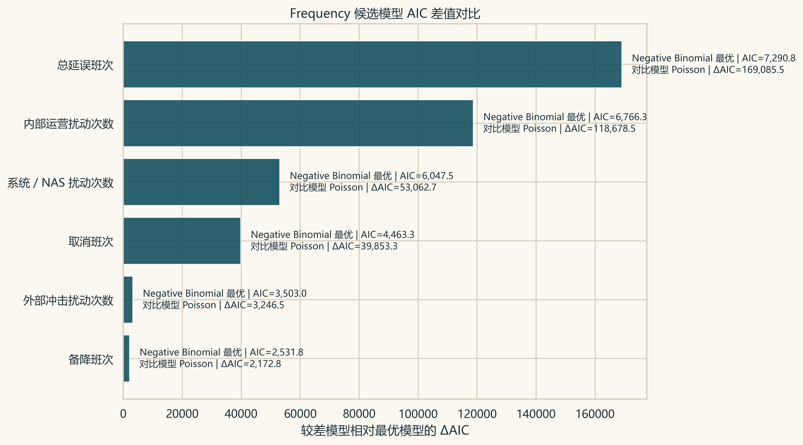
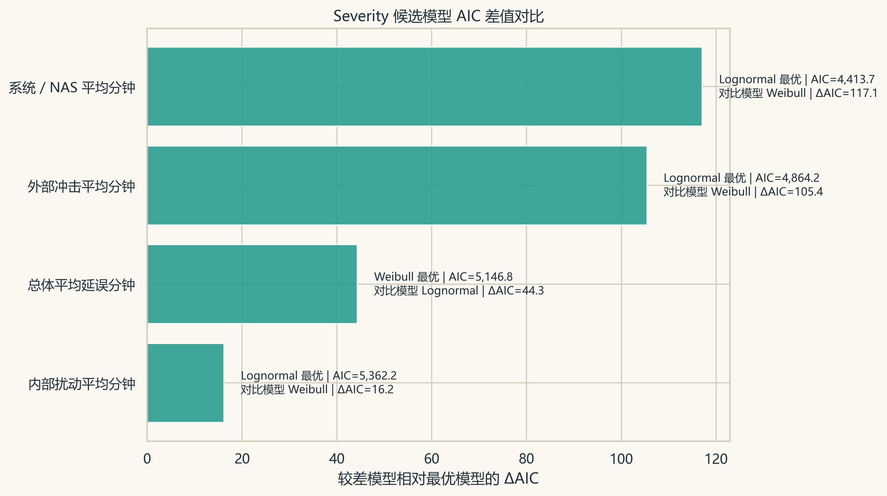
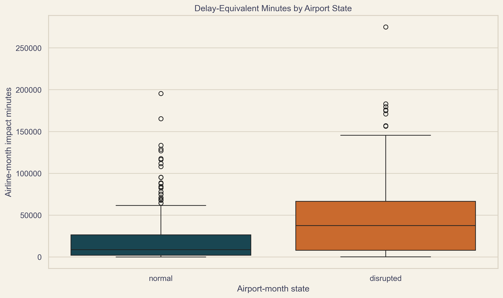
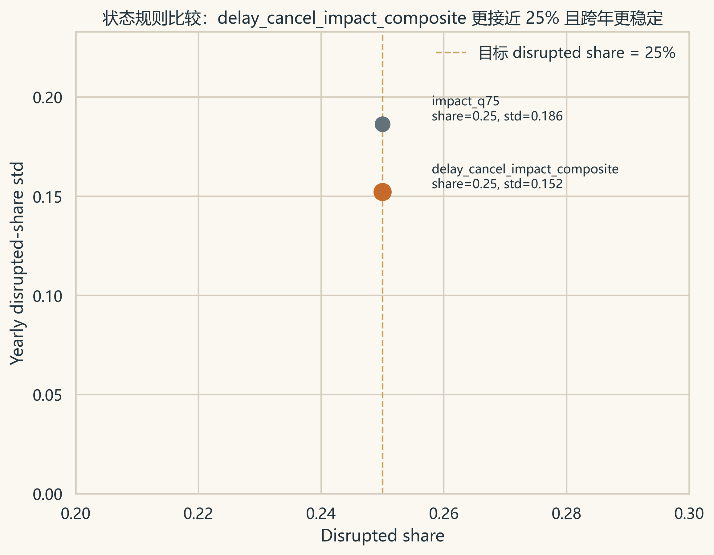
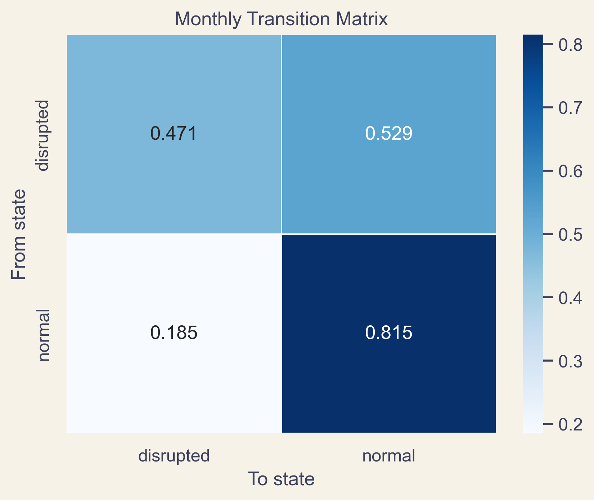
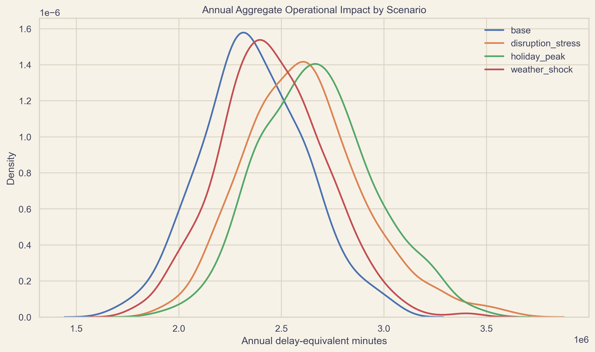

为什么飞机延误
值得被做成一整套风险项目
这不是一份“把结果排版得更好看”的 HTML。 这是一份从 选题动机、风险识别、分布选择、 状态依赖 到 运营启示 的完整项目展示版。
因为货币化会立刻引入大量难以 defend 的外部假设。相比之下，delay-equivalent minutes 更贴近原始数据，也更适合作为课程项目中的 operational impact proxy。
这一步其实也让整份项目更诚实：我们承认当前数据最直接支持的是运营冲击而不是财务损失，因此先把 operational risk 讲清楚，再谈可能的成本外推，会比一开始就把所有东西硬换成钱更稳。

Risk Identification
先从 BTS cause taxonomy 出发，把原始原因重写成 internal / system / external。
Frequency
判断扰动到达过程更像均匀计数，还是已经出现 clustering 与 over-dispersion。
Severity
判断分钟损失的主体形状和尾部结构是不是可以用同一种分布解释。
State Dependence
把机场月度状态从“高风险月份识别”升级到“坏状态会不会延续”。
Aggregate Risk
把频率、严重度和依赖结构收束成 annual impact 的情景结果。
Operator Actions
最后把统计输出翻译成运营商可以提前做什么、重点管什么。
原始字段是数据库语言，不是管理语言。课程里的风险识别更看重责任边界、控制手段和管理动作，所以要把 cause 重新组织成 internal / system / external。
例如 Late Aircraft 在原始表里是单独原因，但从运营链条看，它往往不是独立世界，而是前序航班延误、机组恢复、维修衔接失稳后的传导结果，因此更适合放回 internal disruption 的语义里。
这一步不是显著性检验，而是风险识别框架重写。
| 原始 causes | 课程风险块 | 分钟占比 |
|---|---|---|
| Airline + Late Aircraft | internal | 71.3% |
| NAS | system | 24.3% |
| Weather + Security | external | 4.4% |


AIC = 2k - 2\ln(L)。它不是 p-value，不负责回答“显著不显著”，而是负责在同一候选集里平衡拟合质量与模型复杂度。
所以 AIC 的逻辑不是“证明这个分布是真的”，而是“在当前候选集里，这个分布作为工作模型更合适”。这也是为什么报告里要反复强调 relative fit，而不是 absolute truth。
我们不仅看谁最低，也看低了多少。比如 Frequency 里 总延误班次 的 ΔAIC 达到 169,085.5，说明优势不是边缘性的；Severity 里最清晰的是 系统 / NAS 平均分钟，ΔAIC 为 117.1。
换句话说，AIC 让我们在“候选分布为什么这样定”和“最后为什么这样选”之间搭起了一座桥。没有这一页，后面的结果页很容易被读成黑箱。
所有 frequency 变量都选中了 Negative Binomial。
这不是模型偏好，而是数据在反复告诉我们：JFK 的扰动到达并不接近均匀、独立、低波动的 Poisson 世界。
当方差显著高于均值，且 disrupted 状态下的计数整体抬升时，Poisson 会把真实世界压扁。Negative Binomial 更能容纳事件聚集与高波动。
这背后的运营含义也很直接：延误不是均匀散落在每个月里，而是会在某些压力月份集中爆发。对管理者来说，这意味着风险不是“平均分摊”的，而是存在高压窗口和恢复压力。
| 变量 | 最优模型 | ΔAIC | 均值 | 方差 |
|---|---|---|---|---|
| 总延误班次 | Negative Binomial | 169,085.5 | 241.2 | 91,192.9 |
| 取消班次 | Negative Binomial | 39,853.3 | 32.0 | 4,403.5 |
| 备降班次 | Negative Binomial | 2,172.8 | 3.3 | 29.8 |
| 内部运营扰动次数 | Negative Binomial | 118,678.5 | 151.0 | 45,234.0 |
| 系统 / NAS 扰动次数 | Negative Binomial | 53,062.7 | 82.6 | 8,708.6 |
| 外部冲击扰动次数 | Negative Binomial | 3,246.5 | 7.6 | 69.9 |

| 变量 | 最优模型 | ΔAIC | 样本量 | 扰动态增量 |
|---|---|---|---|---|
| 总体平均延误分钟 | Weibull | 44.3 | 562 | 9.3 |
| 内部扰动平均分钟 | Lognormal | 16.2 | 559 | 5.0 |
| 系统 / NAS 平均分钟 | Lognormal | 117.1 | 498 | 17.7 |
| 外部冲击平均分钟 | Lognormal | 105.4 | 450 | 8.1 |

最清晰的变量是 系统 / NAS 平均分钟，ΔAIC 为 117.1。这不是让结论更混乱，而是让解释更贴近变量本身。
如果所有 severity 变量都机械地落在同一种分布上，反而要怀疑是不是候选集太窄、或解释过度简化。当前结果更像真实世界：不同风险块的分钟损失尾部并不完全一样。

Negative Binomial 对应“方差远大于均值”的现实，internal 风险主导对应原始延误原因结构，holiday peak 风险最高符合高峰运行更脆弱的直觉，而 P(D→D) 高于 P(N→D) 则对应系统进入坏状态后恢复更慢的经验。
这一页的作用，其实是告诉听众：这份项目不是“统计结果看起来漂亮”，而是“统计结果和现实运行逻辑相互印证”。
Frequency 和 severity 能告诉我们扰动出现得多不多、严重到什么程度，但它们默认看到的是“单个月份的分布形状”。
对机场运营来说，这还不够。管理者更关心的是：如果这个月已经进入高压状态，下个月会不会更容易继续坏下去？如果答案是会，那么运营风险就不只是单点冲击，而是带有持续性和恢复压力的过程。
所以 Markov 在这里的任务，是把问题从“高风险月份识别”升级为“状态会不会延续”。
只有先把每个月定义成 normal 或 disrupted，后面才谈得上转移。否则所谓的 Markov 只是术语，没有稳定的状态基础。
delay_cancel_impact_composite 与 impact_q75 的 disrupted share 都是 25.0%，但前者跨年波动更低：0.152 vs 0.186。这意味着 composite rule 更适合拿来做状态依赖分析，因为它更稳定，也更像综合运营压力。

如果转移结果显示 P(D→D) 和 P(N→D) 差不多，那么 Markov 只会告诉我们“坏状态没有明显惯性”，那它的附加价值就有限。
相反，如果进入 disrupted 之后继续留在 disrupted 的概率明显更高，就说明状态依赖确实存在，做 Markov 就不是多余的，而是在揭示前面分布模型看不到的时间结构。
也正因为如此，多年度样本扩展到 72 个 airport-month 后，Markov 才真正值得做。
P(N→D) = 0.185，而 P(D→D) = 0.471。这说明坏状态不是随机独立地散落在时间线上，而是存在明显的延续倾向。
也就是说，Markov 在这里确实补充了新信息：如果只看前面的 frequency 和 severity，你知道风险高不高；但做了 Markov 之后，你还能知道系统一旦变坏，会不会更难立刻恢复。
因此，这一步不是重复已有结论，而是在证明“状态依赖”本身值得被纳入项目框架。
坏状态不是吸收态，因为 P(D→N) = 0.529 仍然高于 P(D→D)，说明系统仍有恢复能力；但 P(D→D) 明显高于 P(N→D)，又说明恢复并不是自动完成的。
所以最稳妥的课堂口径是：JFK 的月度运营状态存在有说服力的经验性状态依赖。这不是过度夸大的强统计证明，但已经足以支持“坏月份会带来后续恢复压力”的管理解释。


基准情景是参考线，天气冲击与节假日高峰代表外部压力，disruption stress 代表系统处于更脆弱状态时的上移风险。相对基准，风险最高的 节假日高峰情景 在 Expected 上高出 305,324 分钟，在 VaR95 上高出 391,212 分钟。
这一页真正想说明的是：项目最后没有停留在“哪个分布更好”，而是回到管理者会问的那句话上，如果运行环境变差，年度风险会被抬高到什么程度。
| 情景 | Expected | VaR95 | TVaR95 |
|---|---|---|---|
| 节假日高峰情景 | 2,672,396 | 3,182,046 | 3,277,558 |
| 扰动加压情景 | 2,611,594 | 3,121,851 | 3,323,802 |
| 天气冲击情景 | 2,455,663 | 2,884,871 | 3,016,875 |
| 基准情景 | 2,367,073 | 2,790,834 | 2,911,906 |
它不是从模型出发，而是从真实运营问题出发；它不是只给结果，而是把为什么这样分类、为什么只比这四个分布、为什么用 AIC、为什么可以做 Markov 全部串成了一条可解释的方法链。
对答辩来说，这一点尤其重要，因为听众看到的不是若干孤立分析，而是一套从识别、建模到解释、再到行动建议的完整项目结构。
你可以把它定义成：一个从机场真实运行问题出发，经过风险识别、统计建模、状态依赖分析，再回到运营决策的完整 operational risk project。
这样收束时，老师和组员看到的就不只是“你们做了很多页”，而是“你们确实完成了一条有设计感的方法链”。